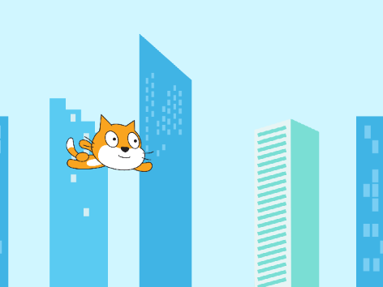
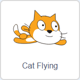
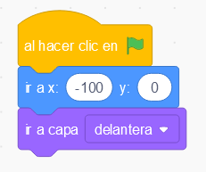
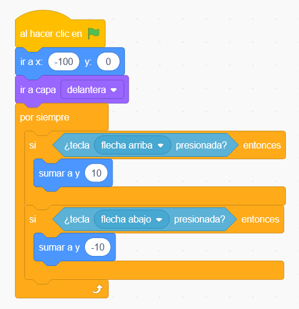
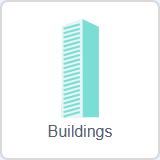
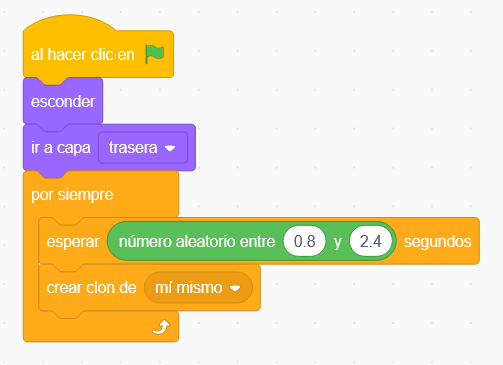
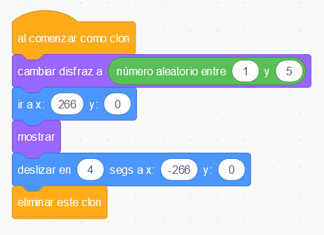
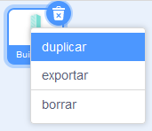
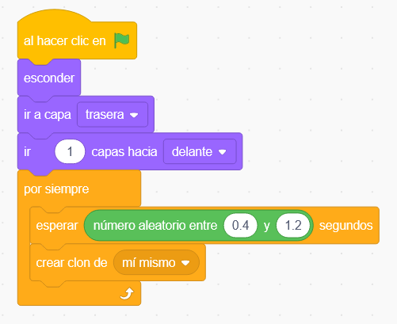

2. Volar con un gato¶
En esta práctica vamos a programar un gato que volará sobre un escenario de edificios que se mueven en el fondo.
{kind=link}
Iniciamos el editor de Scratch.
Pulsamos el botón idioma
 en la barra
superior y elegimos Español.
en la barra
superior y elegimos Español.Pulsamos el botón de tutoriales
 y
luego el botón de animación
y
luego el botón de animación  .
.Seleccionamos el tutorial "Hazlo volar" y lo visualizamos para aprender el funcionamiento básico del programa.
Una vez terminado el tutorial vamos a crear un programa en el que aparezca un gato volador entre edificios.
Borramos el objeto gato presionando sobre el icono del cubo de basura.

Añadimos un nuevo objeto, un gato volador.
Pulsamos el botón elige un objeto
 .
.Buscamos en la sección Animales.
y seleccionamos el objeto Cat Flying.
Ahora vamos a programar la posición inicial del gato. Movemos al gato a la posición deseada y desde la sección movimiento
 añadimos la
instrucción ir a
añadimos la
instrucción ir a  .
.Por último en la sección apariencia
 añadimos la instrucción ir a capa delantera.
Con esta instrucción nos aseguramos de que el gato
volador se pueda ver delante de los edificios y que
estos no le tapen.
añadimos la instrucción ir a capa delantera.
Con esta instrucción nos aseguramos de que el gato
volador se pueda ver delante de los edificios y que
estos no le tapen.Añadimos movimiento al gato para que se desplace arriba y abajo con las teclas de flecha. El programa debe preguntarse si hemos apretado la tecla arriba para mover el gato hacia arriba, igualmente hacia abajo.
Pulsamos la bandera verde
 para probar el funcionamiento del programa.
para probar el funcionamiento del programa.El gato se moverá arriba y abajo con las teclas de flecha arriba y flecha abajo.
Ahora Añadimos un nuevo objeto, un edificio.
Pulsamos el botón elige un objeto
.Buscamos en la sección Todos.
y seleccionamos el objeto Buildings.
Ahora realizaremos el programa del edificio.
Se crearán varios clones para que aparezcan varios edificios a la vez moviéndose hacia la izquierda.
Cada clon de los edificios elige un disfraz diferente, se mueve a la derecha, aparece y se desplaza hacia la izquierda para luego desaparecer.
Pulsamos la bandera verde
para probar el funcionamiento del programa.Por último vamos a añadir una nueva capa de edificios que se moverá más rápido y estará colocada entre el gato y los edificios lentos.
Primero pulsamos con el botón derecho sobre el objeto edificios para duplicar el objeto y poder aprovechar el programa ya realizado.
Seleccionamos el nuevo objeto Buildings2 y modificamos su programa para que se muevan más rápido y para que se visualicen entre el gato y los otros edificios.
Pulsamos la bandera verde
para probar el funcionamiento del programa.
{kind=link}
{kind=link}
{kind=link}
{kind=link}
{kind=link}
{kind=link}
Retos¶
Añade un fondo de noche con estrellas con el botón "Elige un fondo"
 .
.Añade al programa un objeto extra que se comporte como los edificios moviéndose de derecha a izquierda.
Primero elegiremos un objeto pájaro y a continuación en la pestaña disfraces

Pinchamos debajo a la izquierda en el botón "elige un disfraz"
Añadimos más pájaros, dragones y otros disfraces al objeto actual.
Por último repetimos el mismo programa que tenían los edificios para mover los nuevos disfraces por la pantalla.
Modifica el programa para que el gato vuele en la dirección contraria.
Dentro del objeto gato, pulsamos en la opción de dirección y fijamos el giro de izquierda a derecha pulsando en las dos flechas enfrentadas. De esta manera el gato no quedará boca arriba al girar en sentido contrario.